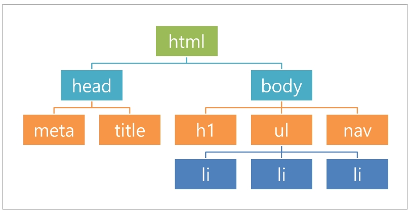
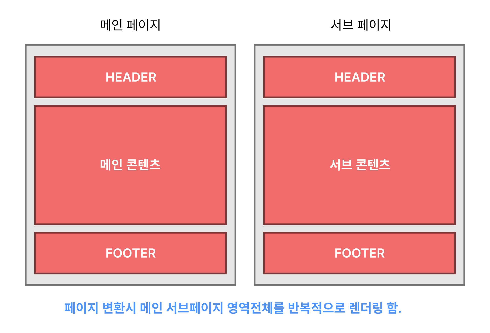
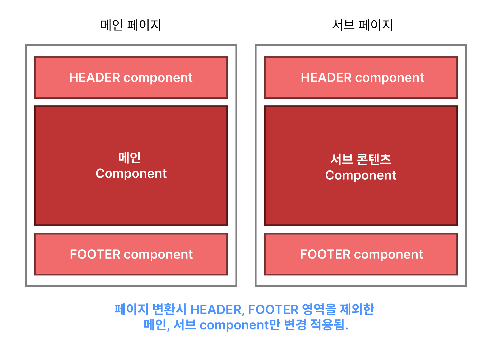

일반 DOM, 가상 DOM 차이 이해하기
DOM(Document Object Model)의 약자
DOM - 객체로 문서구조를 표현하는 방법 => HTML, PHP, XML로 작성
!doctype html
html lang="ko"
head
meta charset="utf-8"
title 제목 /title
/head
body
h2제목 /h2
p문단내용 /p
ul
li 리스트 /li
li 리스트 /li
li 리스트 /li
/ul
a href="#" title=""> 링크 /a
img src="이미지 경로" alt=""
/body
/html
일반 DOM의 단점
- 동적 UI에 최적화 되어 있지 않다.
- HTML문서 자체적으로는 정적이여서 이것을 JS로 동적이게 만들어야 한다.
- DOM을 조작할 때마다 엔진이 웹페이지를 다시 새로 그리기 때문에(렌더링) 업데이트가 너무 잦으면 성능이 떨어진다.
- 데이터가 많은 페이지에서 스크롤바를 내릴수록 수많은 데이터가 로딩되는데 데이터를 표현하는데 있어 속도가 떨어지기 때문에 성능 이슈가 발생될 수 있다.
- 위와 같은 상황에서 문제를 느낀 페이스북에서는 대규모 프로젝트를 생성시 편하게 사용할 수 있고, 빠르게 대처할 수 있는 리액트를 새롭게 만들었음.
리플로우(Reflow) : DOM의 구조나 레이아웃이 변경되면 브라우저는 새로운 레이아웃을 계산하고 화면을 다시 그립니다. 이를 리플로우라고 함. 예를 들어 요소의 크기나 위치를 변경하면 리플로우가 발생됨
리페인트(Repaint) : 요소의 색상이나 테두리 등 서식이 변경되면, 브라우저는 해당 요소를 다시 그립니다. 이를 리페인트라고 함.


가상돔(Virtual DOM)
- DOM을 추상화 시켜놓은 것.
- 가상돔은 실제 DOM의 가벼운 복사본으로서 메모리 상에 존재하며, JAVASCRIPT 객체 형태로 존재
- 리액트는 렌더링 이전화면, 렌더링 이후 화면 구조를 가진 두개의 가상돔 객체를 가지고 있으며, 문서안에 상태변화가 일어나면(변경되는 값이 존재한다면) 실제로 브라우저의 DOM에 새로운 것을 넣는 것이 아닌, 자바스크립트로 이루어진 가상 DOM에 한번 렌더링을 하고, 기존의 DOM과 비교를 한 다음에 정말 변화가 필요한 곳에만 업데이트를 함.
- 가상 돔의 비교 과정에서 'diffing알고리즘'이 사용됨.(변경된 부분을 정확하게 찾음)
- in-memory영역에 존재해서 실제 렌더링 되지는 않음.
- 리액트는 여러 상태 업데이트를 한번에 수행하는 'batch update' 메커니즘을 통해 더욱 효율적인 렌더링을 가능하게 함.
- react, vue에서 많이 사용하는 기법
